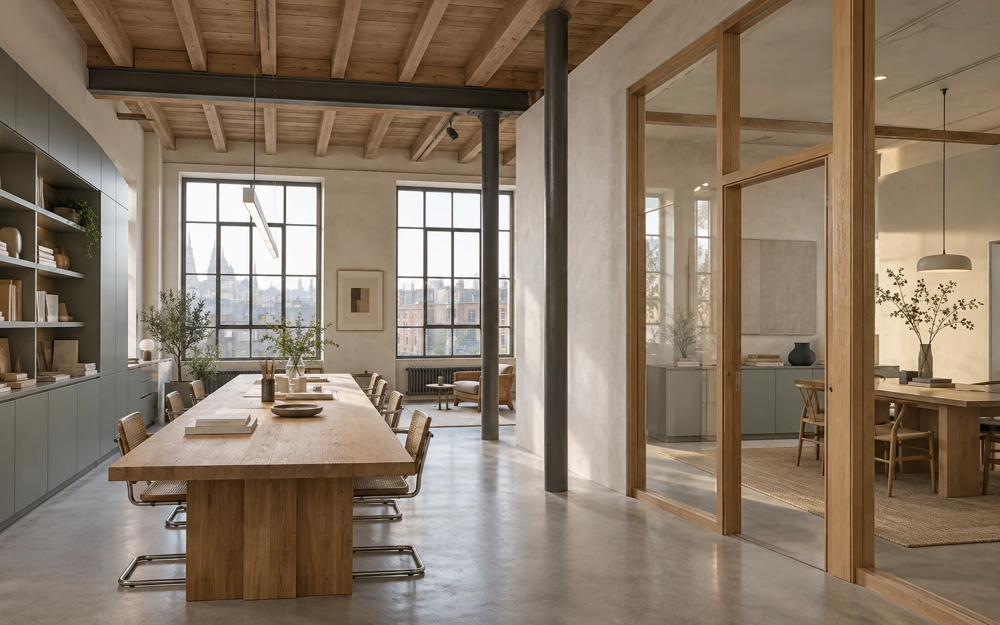
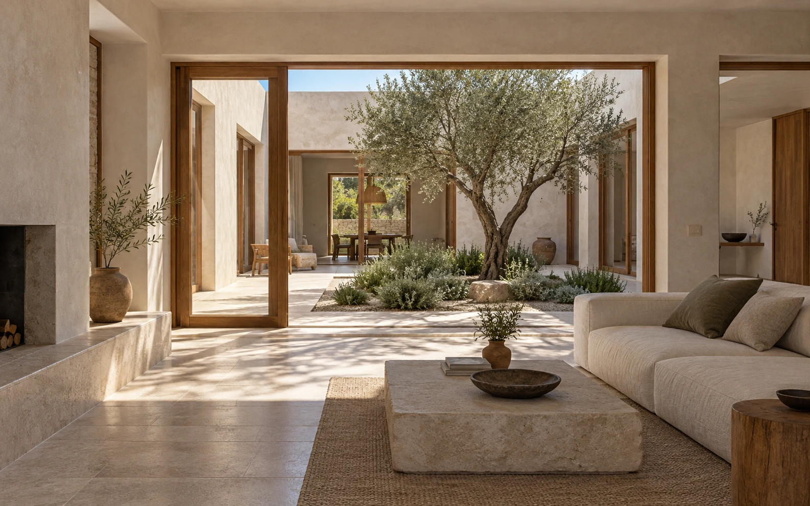
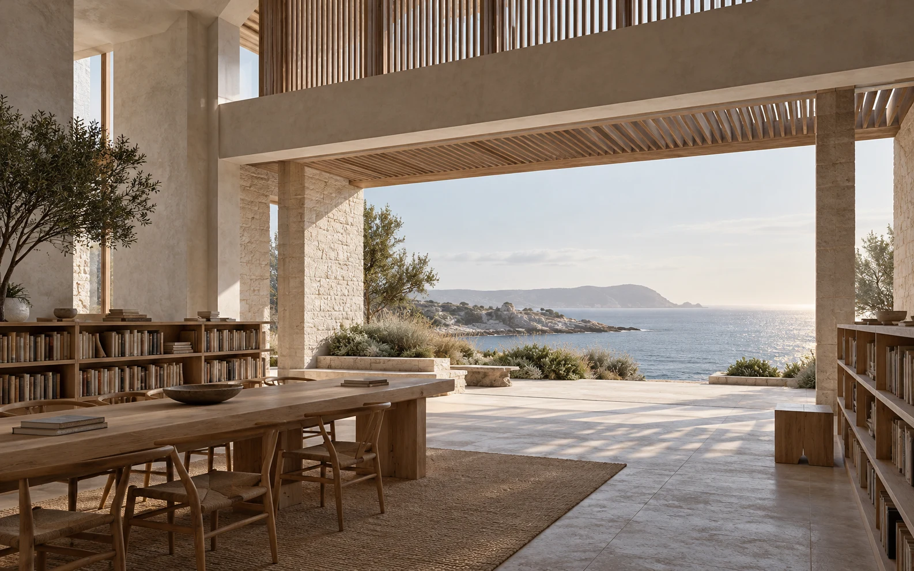

Line Studio
Shared work and quiet concentration occupy distinct but connected zones. A warm material palette gives the small workplace a calm character.
Discuss a projectFictional starting identity created for this rebrand study.


Shared work and quiet concentration occupy distinct but connected zones. A warm material palette gives the small workplace a calm character.
Discuss a project
A shaded threshold connects public gathering with quieter reading areas. The opening offers a place to pause before moving inside.
Discuss a projectForm is an imagined practice interested in thoughtful homes, small workplaces, and cultural spaces. Light, material, movement, and use inform its approach.
These three fictional architectural studies are part of a self-initiated rebrand project. No built work or client commission is claimed.
Describe the space you have in mind.
Local demonstration. No enquiry is sent. This fictional baseline separates facts from imagery and opens Contact without carrying a reference project.